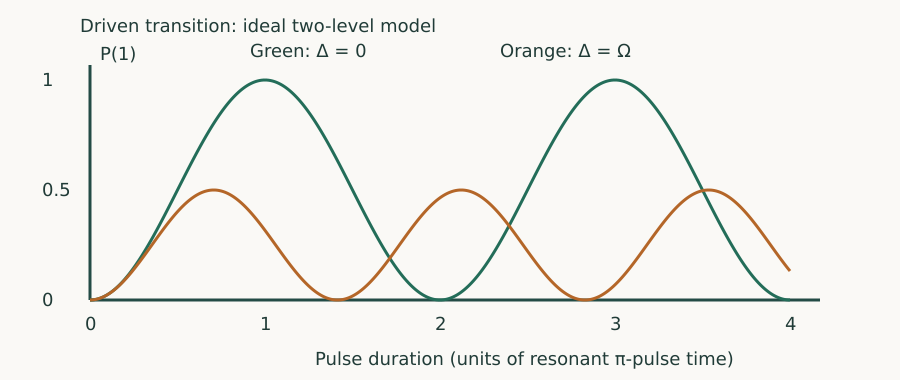

Quantum Hardware · Chapter 3 · Draft lesson
Coherent Control
How does a timed field implement a desired quantum gate?
Chapter direction
Starting point: Chapters 1–2; physical concepts and approximations are introduced as needed.
Anchor example: Calibrating a resonant pulse to produce a pi rotation.
This lesson includes explanations, worked examples, and problems with solutions. Advanced results whose proofs are outside the chapter are identified explicitly.
3.1 Driven Transitions
Prepare zero and apply a resonant field for a variable time. The measured excited population oscillates. This experiment turns an abstract X rotation into a calibrated duration and field amplitude.
3.1.1 Resonance and Rabi oscillations
In a rotating-frame model, let \(H_{\rm rot}=\hbar(\Delta Z+\Omega X)/2\), with Δ defined as the coefficient of Z in this frame and Ω the on-resonance angular Rabi rate. At Δ=0, evolution is \(R_x(\Omega t)=\cos(\Omega t/2)I-i\sin(\Omega t/2)X\). Starting from zero gives \(P_1=\sin^2(\Omega t/2)\). A π pulse has Ωt=π, swapping the populations.
3.1.2 Pulse area and phase
If Ω/2π=5 MHz, a square π pulse lasts 100 ns. Changing the drive phase selects a rotation axis in the XY plane: \(H=\hbar\Omega(\cos\phi X+\sin\phi Y)/2\) under the chosen phase convention. For a resonant pulse with a fixed axis, the rotation angle is the area \(\int\Omega(t)dt\). Varying axes in time generally requires ordered evolution rather than a single scalar area.

Problem 3.1. What is the π/2-pulse duration at a 5 MHz Rabi rate?
Worked solution
50 ns. The angular rate is 2π·5 MHz, so Ωt=π/2.
3.2 Control Errors
3.2.1 Detuning and amplitude error
For constant detuning, define \(\Omega_R=\sqrt{\Omega^2+\Delta^2}\). Directly exponentiating the Pauli combination gives \(P_1(t)=\Omega^2\sin^2(\Omega_Rt/2)/\Omega_R^2\). Detuning reduces the maximum population transfer and tilts the rotation axis. A fractional amplitude error ε changes a nominal π angle to π(1+ε), producing population error approximately π²ε²/4 near the intended inversion. That one-input error does not fully characterize the coherent gate error.
3.2.2 Pulse shaping and leakage
A shorter pulse needs more bandwidth and stronger drive. That can excite nearby transitions or distort the rotating-wave approximation, which neglects rapidly oscillating terms when the control scales are small relative to the carrier frequency. Smooth envelopes reduce some spectral leakage, but a particular pulse shape must be checked against the actual multilevel system and transfer function.
Problem 3.2. If |Δ|=Ω, can a square pulse invert perfectly?
Worked solution
No. The maximum excited probability in this model is Ω²/(Ω²+Δ²)=1/2.
3.3 Gate Calibration
3.3.1 Rotation experiments
A Rabi scan estimates pulse area; repeated small rotations can magnify a calibration error; Ramsey experiments expose detuning. Use independent validation sequences after fitting. A maximum in excited-state probability may be shifted by readout error or drift, and a successful inversion alone does not verify the intended phase on an arbitrary superposition.
3.3.2 Frames and virtual phases
A virtual Z updates the phase reference for later controls rather than requiring a separate resonant pulse. It represents a logical Z rotation only if subsequent drive phases and measurement bases consistently use that updated frame. Frame tracking is powerful because it avoids some physical operations, but losing track of a frame produces real relative-phase errors.
Problem 3.3. Why is a successful zero-to-one pulse insufficient as a gate test?
Worked solution
Its phase action on superpositions may be wrong even when the output population is correct. An interference experiment is needed.
A single drive supplies rotations. Two-qubit gates require an interaction that cannot be written as separate local evolutions.